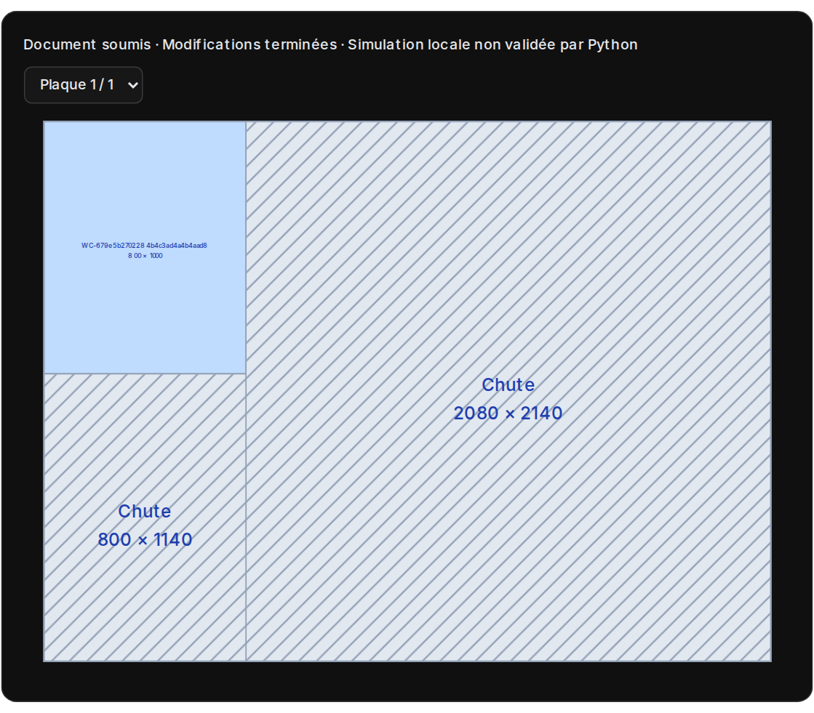
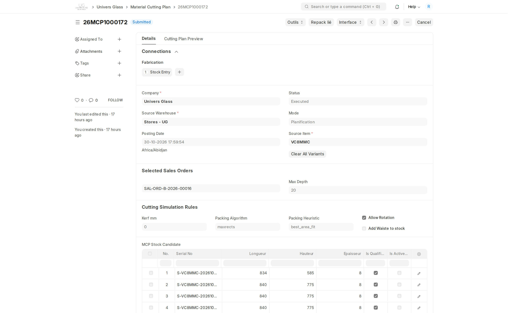
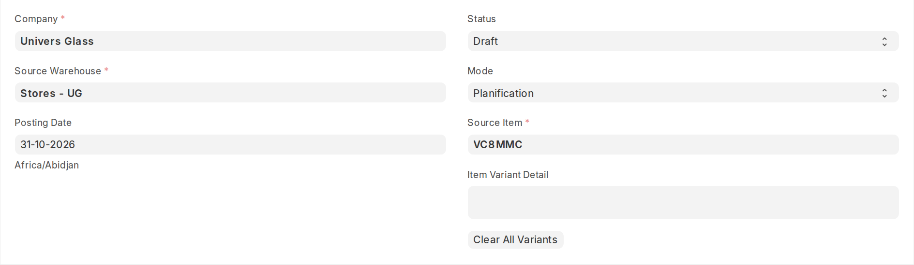
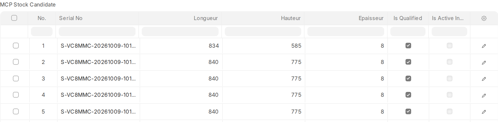
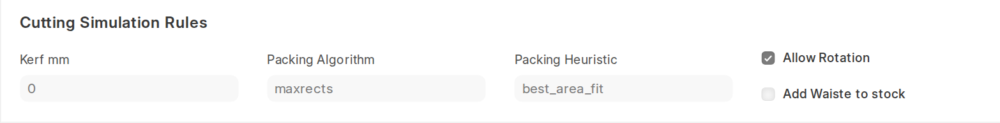
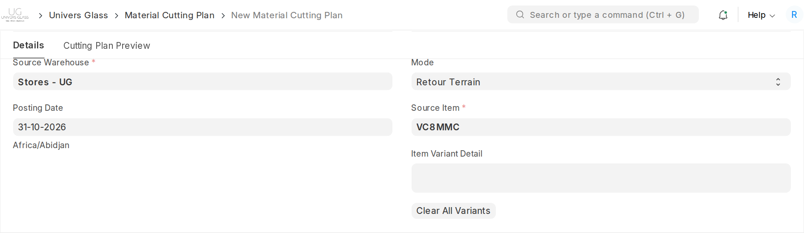
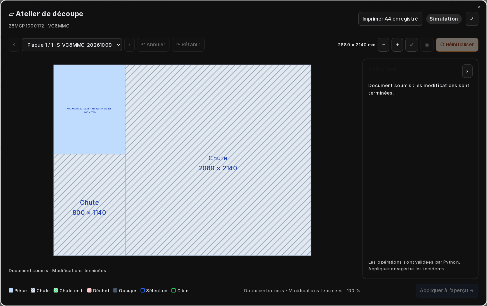
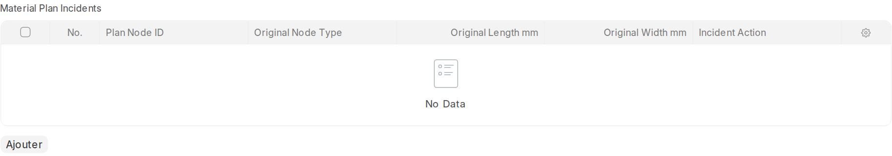

Le MCP
Préparer et imprimer la découpe pour les techniciens, puis enregistrer leur retour et contrôler les sorties de stock.
Plan imprimé aux techniciens→RETOUR TERRAIN
Résultat réel et écarts→VALIDATION FINALE
Repack exécuté

La Planification produit le plan de découpe à remettre aux techniciens. Le Retour terrain permet ensuite de reporter leur réalisation et les écarts, avant validation finale.
Les MCP existants consultés étaient exécutés. Les captures de préparation montrent de vrais formulaires non enregistrés ; elles ne constituent pas un nouveau plan ni un Retour terrain validé. Aucune opération métier n’a été exécutée pour le guide.
Deux modes : Planification et Retour terrain
Le MCP (Material Cutting Plan) organise les découpes à produire à partir de plaques et de chutes identifiées par série. Son mode décrit le travail en cours ; son état documentaire détermine ce qui reste modifiable.
| Planification | Retour terrain | |
|---|---|---|
| Objectif | Préparer et imprimer le plan de découpe à remettre aux techniciens, en calculant le placement sur les matières disponibles. | Reporter ce qui a réellement été réalisé par les techniciens et les écarts constatés : casse, dimensions ou récupération de zones. |
| Point de départ | Matière, commandes et séries candidates. | Un plan initial déjà calculé et enregistré. |
| Séries de référence | Séries qualifiées pour participer au calcul. | Séries actives retenues par le plan, complétées si une compensation autorisée l’exige. |
| Résultat | Plan de découpe enregistré et imprimé pour les techniciens, avec les pièces et séries à utiliser. | Plan effectif après incidents et éventuels remplacements. |
| État requis pour modifier | Brouillon, avec droits de saisie. | Brouillon, avec droits de saisie ; les incidents ne se saisissent pas sur un MCP validé. |
Simulated signifie qu’un calcul a placé des pièces. Cela ne prouve pas une sortie de stock. Executed indique que le Repack lié a été exécuté.
Ouvrir un MCP ou préparer un nouveau plan
- Depuis le cockpit atelier, sélectionner un besoin à découper et préparer le MCP. Relire le périmètre avant de créer la simulation.
- Pour un plan existant, cliquer sur sa carte à droite du cockpit, ou ouvrir la liste Material Cutting Plan dans ERPNext.
- Contrôler le numéro, la société, la matière, le dépôt, le mode et l’état.
- Pour une préparation manuelle autorisée, utiliser Nouveau dans la liste, puis renseigner les informations de Planification décrites ci-après.

Pour les commandes issues du parcours actuel, les découpes et ouvrages doivent avoir leur fiche technique validée pour être pris en charge par le cockpit atelier.
Planification — matière, dépôt et variantes
- Choisir la société et vérifier le dépôt source. Pour les vitres Univers Glass, le dépôt usuel est Stores - UG.
- Sélectionner le Source Item : l’article PRIMAIRE correspondant à la matière et à son épaisseur.
- Laisser le mode Planification.
- Contrôler les variantes proposées : elles étendent les articles sources compatibles pris en compte, sans remplacer le choix de la matière.
- Vérifier la date et les paramètres avant de charger les commandes et le stock.

Préparer des plans distincts pour des matières ou épaisseurs incompatibles. Le dépôt proposé reste à contrôler par rapport à la localisation réelle des séries.
Planification — choisir les commandes
- Avec la matière renseignée, ouvrir Outils → Select Orders for Source Item.
- Vérifier les commandes sélectionnées : le système recherche les besoins de découpe encore non couverts pour cette matière.
- Relire les commandes concernées et leurs quantités avant de calculer le plan.
- Depuis le cockpit, contrôler également ce périmètre : le plan peut regrouper d’autres commandes de la même matière que celle sur laquelle vous avez cliqué.

Une liste vide peut signifier qu’aucun besoin admissible ne reste pour cette matière. Vérifier la validation des commandes et des fiches techniques, les fabrications déjà faites et les plans ouverts.
Ne pas supprimer toutes les commandes d’un plan par réflexe : une sauvegarde sans commandes sélectionnées efface ses résultats de calcul.
Planification — charger et qualifier les séries
- Ouvrir Outils → Get Stock pour charger les plaques et chutes candidates de la matière, des variantes et du dépôt.
- Contrôler pour chaque source sa série, son article, son dépôt et ses dimensions.
- Conserver Is Qualified sur les séries autorisées à participer au calcul. Déqualifier les matières à écarter.
- Garder au moins une série qualifiée avant l’enregistrement du calcul.

| Colonne | En Planification |
|---|---|
| Is Qualified | Autorisation de participer au placement. Une source qualifiée n’est pas forcément utilisée. |
| Is Active Input | Indicateur des sources effectivement utilisées par le plan calculé. Ce n’est pas la case à cocher pour imposer tous les candidats. |
| Cases de sélection de la grille | Sélection de lignes de l’interface ; ne pas les confondre avec Is Qualified. |
Planification — régler et enregistrer le calcul

| Paramètre | Contrôle à effectuer |
|---|---|
| Kerf mm | Renseigner le trait de coupe en millimètres selon le procédé réel. |
| Allow Rotation | Autoriser la rotation uniquement si elle convient à la matière et aux contraintes de production. |
| Packing Algorithm / Heuristic | Règles de placement. Garder la configuration de l’atelier sauf consigne du responsable. |
| Max Depth | Profondeur d’exploration des compositions pour retrouver les découpes. |
| Add Waiste to stock | Choix de remise en stock des zones classées déchets ; vérifier le résultat attendu avec le responsable. |
- Vérifier matière, commandes, séries qualifiées et paramètres.
- Cliquer sur Enregistrer : l’enregistrement en Planification calcule ou recalcule le plan.
- Attendre le résultat et vérifier le statut ainsi que les compteurs.
- Si des pièces restent manquantes, contrôler formats et capacité avant de poursuivre.
Planification — imprimer et remettre aux techniciens
- Ouvrir Cutting Plan Preview pour lire le dessin.
- Vérifier la série source, ses dimensions et chaque pièce placée : commande, article, dimensions et orientation.
- Parcourir toutes les plaques avec les commandes de navigation.
- Comparer les pièces demandées, planifiées et manquantes ; relire aussi les surfaces et les chutes.
- Utiliser l’impression du MCP ou Imprimer A4 enregistré dans l’atelier. Vérifier que toutes les plaques utiles sont imprimées avec les séries, dimensions et affectations correctes.
- Remettre ce plan aux techniciens comme consigne de découpe. Identifier le numéro du MCP et demander le retour des pièces réalisées, chutes conservées et incidents constatés.
La sortie principale de la Planification est ce document de travail remis aux techniciens. Pour simplement l’imprimer, enregistrer le plan suffit : ne pas valider le MCP, car cette validation exécute le Repack et verrouille le document.
Dans Interface → UX 2.0, la navigation, le zoom et l’affichage agrandi facilitent la lecture. En Planification, les actions d’incident ne sont pas le moyen de corriger le calcul initial : ajuster ses données et recalculer si nécessaire.
Voir la pièce planifiée. · Voir les compteurs. · Voir le résumé.


Retour terrain — basculer avant validation finale
Après la découpe réalisée par les techniciens à partir du plan imprimé, reprendre le même MCP pour reporter le résultat réel et les écarts constatés.
- Partir d’un MCP brouillon dont la Planification est déjà calculée et enregistrée.
- Contrôler le plan initial et les séries utilisées.
- Passer le mode à Retour Terrain, puis enregistrer ce changement avant d’ouvrir l’éditeur d’incidents.
- Conserver les entrées actives nécessaires. Ne pas réintroduire toutes les sources qualifiées comme si l’on recommençait une optimisation globale.
- Ouvrir l’atelier pour déclarer les écarts réellement constatés.

Si le MCP est déjà validé et exécuté, il est trop tard pour modifier ce même document comme un brouillon. Faire examiner la correction et les mouvements liés par le responsable ; ne pas créer une deuxième sortie de stock pour contourner le verrouillage.
Retour terrain — utiliser l’atelier et ses actions

| Action proposée | Usage et limite |
|---|---|
| Déplacer | Déplacer une pièce finie vers une zone libre compatible. La destination doit permettre le placement ; la rotation reste contrôlée. |
| Redimensionner | Déclarer une réduction admissible sur une région proposée par l’éditeur. Une pièce devenue non conforme ne remplit plus automatiquement le besoin commercial. |
| Détruire | Déclarer la perte de la région sélectionnée ; une pièce détruite n’est plus une pièce livrable. |
| Fusionner | Réunir des zones libres compatibles d’une même plaque, dans les limites géométriques autorisées. |
| Chute en L | Représenter une récupération en L à partir de régions compatibles d’une même plaque. Le retrait doit rester cohérent. |
Cliquer sur une pièce ou une zone affiche seulement les actions admissibles pour cette région. Choisir l’action, renseigner ses paramètres ou sa cible, puis lire la prévisualisation et les contrôles.
Retour terrain — confirmer puis enregistrer les incidents
- Sélectionner la pièce ou zone concernée et choisir son action.
- Lire les dimensions source, la cible et les conséquences proposées.
- Cliquer sur Confirmer dans le panneau de l’action. Cela prépare l’opération dans l’éditeur ; ce n’est pas encore la validation du MCP.
- Traiter les autres incidents utiles et relire le résultat d’ensemble.
- Cliquer sur Appliquer à l’aperçu →. Sur un MCP Retour Terrain enregistré avec les contrôles serveur actifs, ce bouton enregistre les incidents et recharge le résultat contrôlé.
- Attendre la confirmation d’enregistrement et vérifier le plan effectif avant toute impression ou validation finale.

Si l’écran indique Simulation locale ou Non enregistré, ne pas considérer le résultat comme conservé. En cas de conflit de version, recharger et contrôler ce qui est déjà enregistré avant de recommencer.
Retour terrain — compenser les pièces à remplacer
Une casse ou un redimensionnement peut rendre une pièce non conforme. La compensation recherche un remplacement pour le besoin commercial concerné, sans compter la pièce perdue comme produite.
- Enregistrer d’abord les incidents et sortir de toute action encore en cours.
- Ouvrir Compenser sur un brouillon Retour Terrain admissible.
- Lire les pièces à compenser, leurs dimensions, leur matière et leur commande.
- En mode Automatique, laisser le calcul proposer les sources compatibles. En mode Manuel, choisir les sources proposées et renseigner la justification demandée.
- Cliquer sur Calculer, puis vérifier remplacements proposés, matières ajoutées et pièces restant à couvrir.
- Cliquer sur Valider la compensation pour enregistrer la proposition serveur, puis relire le plan effectif.
| Résultat | À comprendre |
|---|---|
| Remplacement proposé | Placement calculé, pas encore une preuve de fabrication. |
| Compensation enregistrée | Plan de remplacement conservé sur le brouillon ; les sorties de stock attendent leur exécution. |
| Pièces restantes | Besoins encore à couvrir ; ne pas les déclarer soldés sans pièce conforme. |
Les captures de ce guide ne présentent pas une compensation fictive : les plans disponibles étaient exécutés, donc verrouillés. Cette procédure décrit les commandes de l’application lorsqu’un brouillon Retour Terrain admissible existe.
Retour terrain — annuler une action ou réinitialiser
| Commande | Effet |
|---|---|
| Annuler dans le panneau | Abandonner l’action en cours avant confirmation. |
| Annuler / Rétablir dans la barre | Parcourir les modifications de la session d’édition lorsque ces actions sont disponibles. Ce n’est pas l’annulation d’un mouvement de stock validé. |
| Réinitialiser | Après confirmation, supprimer les incidents et compensations du brouillon et restaurer le plan initial de Planification. Cette action peut enregistrer la restauration sur le serveur. |
| Fermer l’atelier | Fermer la fenêtre. Vérifier le statut d’enregistrement auparavant ; fermer ne remplace pas Appliquer. |
Pour seulement revoir le plan enregistré, recharger le document après avoir vérifié les modifications en attente. Ne pas changer de matière ou relancer une Planification pour masquer des incidents non résolus.
Valider le MCP et exécuter le Repack lié
- Contrôler le plan à exécuter : initial en Planification, ou effectif après Retour terrain.
- Vérifier les commandes, pièces conformes, remplacements, séries actives, dépôts, chutes et déchets attendus.
- Enregistrer les modifications et résoudre les besoins non couverts ou incohérences signalés.
- Valider le MCP avec un compte habilité, puis attendre la fin des contrôles.
- Vérifier l’état Executed et ouvrir Repack lié pour relire le mouvement validé.

Create Draft Repack prépare un brouillon de mouvement lorsqu’il est disponible ; ce n’est pas une deuxième fabrication à lancer indépendamment. La validation du MCP utilise le Repack lié admissible. Ne pas produire deux fois les mêmes sorties.
Consulter, imprimer et transmettre à l’atelier
- Après validation, vérifier le MCP et le Repack liés ; conserver leurs numéros pour la traçabilité.
- Utiliser l’impression du MCP, ou Imprimer A4 enregistré dans l’atelier, pour imprimer le plan conservé sur le serveur.
- Pour imprimer les derniers incidents, s’assurer d’abord qu’ils sont bien enregistrés et rechargés.
- Revenir au cockpit atelier et actualiser : les découpes produites peuvent permettre les assemblages parents.
- Transmettre au circuit commercial les pièces et séries conformes pour la livraison ; une découpe produite n’est pas encore une livraison client.
Un MCP exécuté en mode Planification ne peut pas devenir un espace de correction libre. Si une anomalie est constatée après les mouvements validés, faire traiter sa régularisation et sa traçabilité par le responsable.
Contrôles finaux et messages de blocage
| Message ou situation | Vérification |
|---|---|
| Aucune série qualifiée | En Planification, charger Get Stock et conserver au moins une source Is Qualified. |
| Aucune entrée active | En Retour Terrain, vérifier les sources effectivement retenues et garder une entrée active admissible. |
| Aucun plan enregistré | Calculer et enregistrer d’abord une Planification. Un changement de mode seul ne crée pas un plan. |
| Incidents non modifiables | Vérifier le mode Retour Terrain, le brouillon et les droits. Un plan soumis est verrouillé. |
| Géométrie incompatible | Relire dimensions, cible, rotation, zones libres et appartenance à la même plaque lorsque l’action l’exige. |
| Besoin non couvert après incident | Contrôler les pièces détruites ou non conformes et utiliser la compensation admissible. |
| Le MCP ou le stock a changé | Recharger, relire puis recalculer la proposition. Ne pas confirmer un aperçu ancien. |
| Plusieurs Repack brouillons liés | Faire vérifier les mouvements : un seul brouillon admissible doit être conservé pour l’exécution. |
| Échec lors de la validation | Lire l’erreur de stock, série, dépôt, permission ou dimension comptable. Ne pas créer une sortie manuelle de contournement. |
Avant validation finale
Confirmer le bon mode, le bon plan enregistré, les bonnes commandes, les séries réellement retenues, les pièces conformes et le traitement des manquants.
Captures réelles de production du 31 octobre 2026. Les exemples de création et de changement de mode sont restés non enregistrés. Aucun MCP, incident, mouvement ou remplacement n’a été créé ou validé pour ce guide.